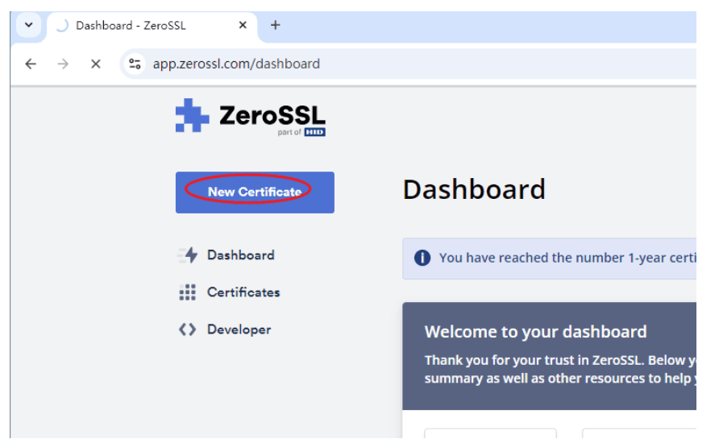
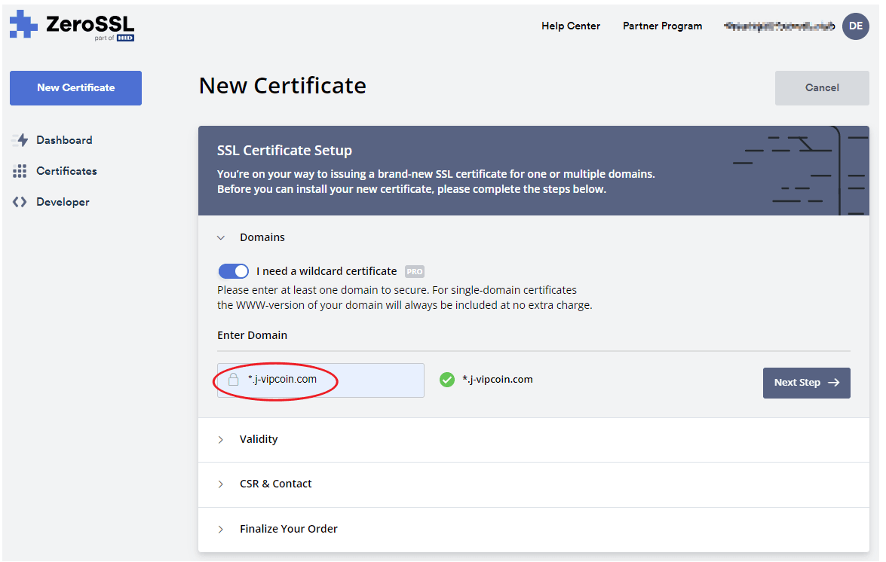
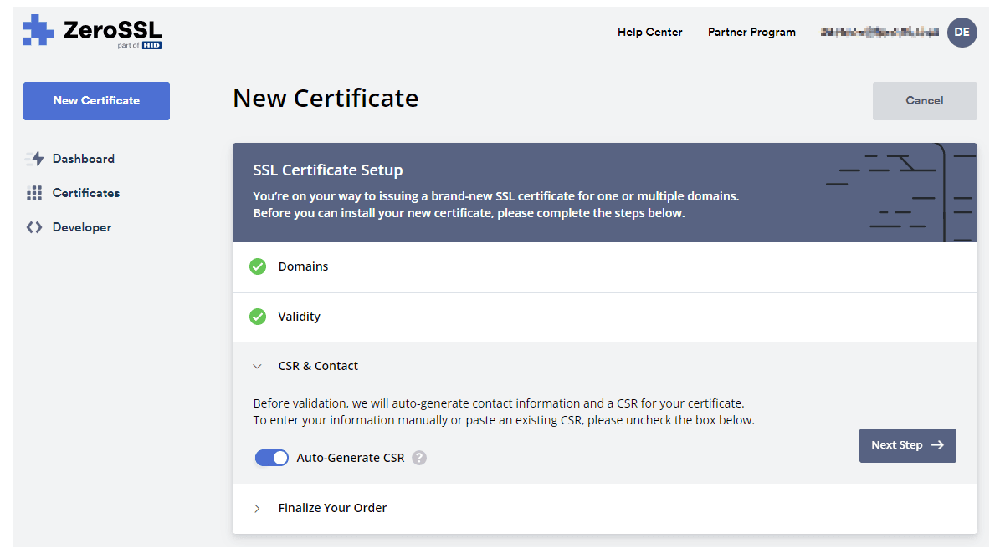
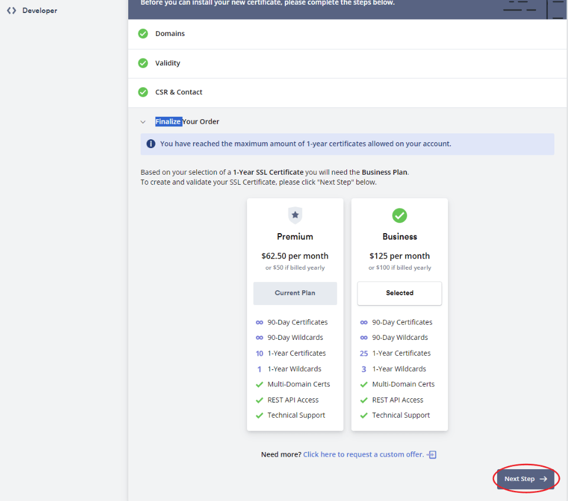
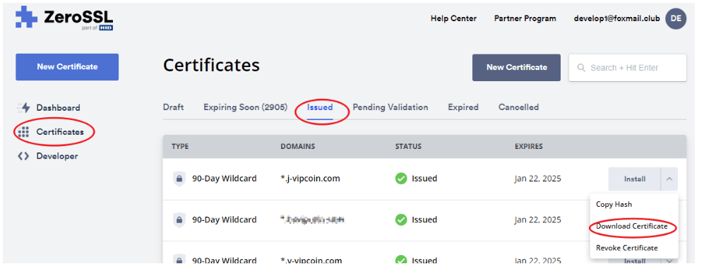
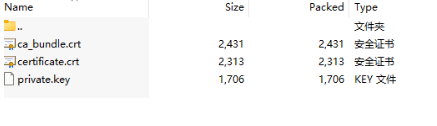
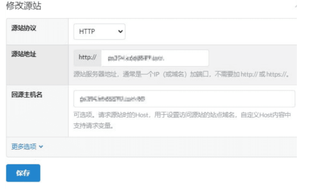

一、概述
该教程主要用于指导开放回源用户。由于用户在配置回源总会遇到各种各样问题，为了更提供快速接入，特撰写文档。
二、【方案一】基于Linux服务器配置Nginx
2.1 RHEL安装Nginx
2.1.1 安装依赖
sudo yum -y install yum-utils
2.1.2 配置Nginx yum源
cat >/etc/yum.repos.d/nginx.repo<<EOF
[nginx-stable]
name=nginx stable repo
baseurl=http://nginx.org/packages/centos/\$releasever/\$basearch/
gpgcheck=1
enabled=1
gpgkey=https://nginx.org/keys/nginx_signing.key
module_hotfixes=true
[nginx-mainline]
name=nginx mainline repo
baseurl=http://nginx.org/packages/mainline/centos/\$releasever/\$basearch/
gpgcheck=1
enabled=0
gpgkey=https://nginx.org/keys/nginx_signing.key
module_hotfixes=true
EOF
2.1.3 安装nginx
sudo yum -y install nginx
sudo systemctl enable nginx
sudo systemctl start nginx
2.2 申请SSL证书
ZeroSSL官网：https://app.zerossl.com/
2.2.1 申请步骤





2.2.2 下载证书
首先，进入nginx的目录
cd /etc/nginx/ # 证书目录
然后，将证书解压，上传至服务器的 /etc/nginx/ 目录中
证书内容，如下图

2.3 回源配置
# nginx -v
nginx version: nginx/1.26.2
$ vi /etc/nginx/nginx.conf
user nginx;
worker_processes auto;
error_log /var/log/nginx/error.log;
pid /var/run/nginx.pid;
events {
worker_connections 1024;
}
http {
include /etc/nginx/mime.types;
default_type application/octet-stream;
log_format main '$remote_addr - $remote_user [$time_local] "$request" '
'$status $body_bytes_sent "$http_referer" '
'"$http_user_agent" "$http_x_forwarded_for"';
access_log /var/log/nginx/access.log main;
# 定义了缓存区域 my_cache
proxy_cache_path /etc/nginx/cache levels=1:2 keys_zone=my_cache:10m max_size=10g inactive=60m;
sendfile on;
tcp_nopush on;
tcp_nodelay on;
keepalive_timeout 65;
types_hash_max_size 2048;
server {
listen 80;
listen 443 ssl;
http2 on;
server_name localhost;
# HTTPS 配置
ssl_certificate certificate.crt;
ssl_certificate_key private.key;
ssl_trusted_certificate ca_bundle.crt;
ssl_protocols TLSv1.2 TLSv1.3;
ssl_ciphers 'HIGH:!aNULL:!MD5';
ssl_prefer_server_ciphers on;
location / {
proxy_pass http://ogslf5-xxx-ppp.s3-website.ap-east-1.amazonaws.com; # 配置回源地址
proxy_set_header Host ogslf5-xxx-ppp.s3-website.ap-east-1.amazonaws.com; # 重写回源Host
proxy_set_header X-Real-IP $remote_addr;
proxy_set_header X-Forwarded-For $proxy_add_x_forwarded_for;
proxy_set_header X-Forwarded-Proto $scheme;
# 缓存配置
proxy_cache my_cache;
proxy_cache_valid 200 302 10m;
proxy_cache_valid 404 1m;
}
}
}
配置完成，需要重新加载或者重启
sudo systemctl reload nginx
三、【方案二】基于云平台CDN配置
3.1 业主获取到回源域名
例如：
ogslf5-xxx-ppp.s3-website.ap-east-1.amazonaws.com
3.2 回源地址与回源Host配置
注：修改回源，一定要记得配置回源host，要不然会失败
基本信息
源：ogslf5-xxx-ppp.s3-website.ap-east-1.amazonaws.com
协议：http
端口：80
回源host：ogslf5-xxx-ppp.s3-website.ap-east-1.amazonaws.com
截图示例：
